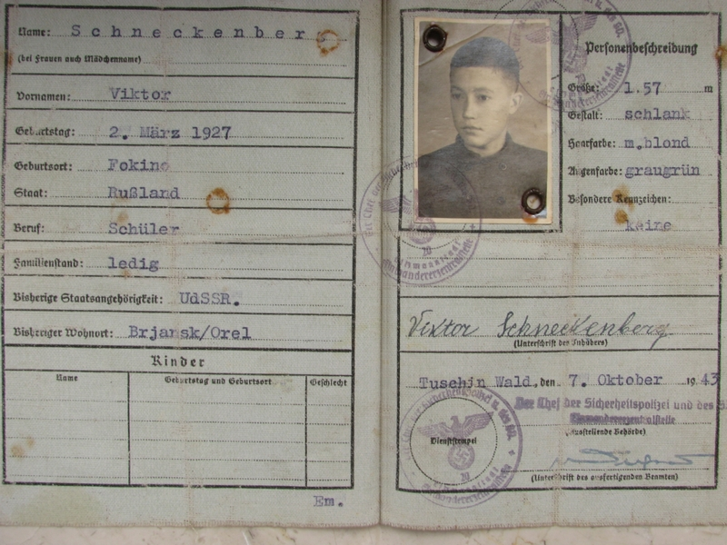
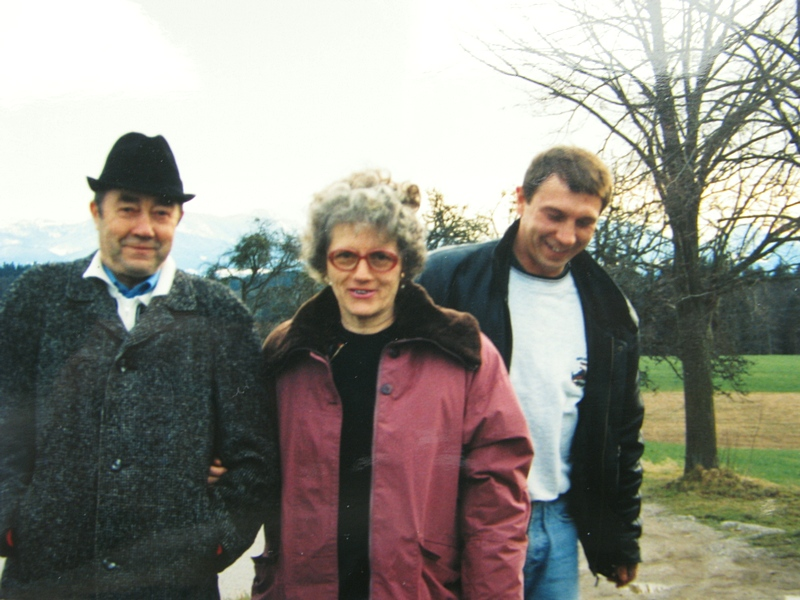
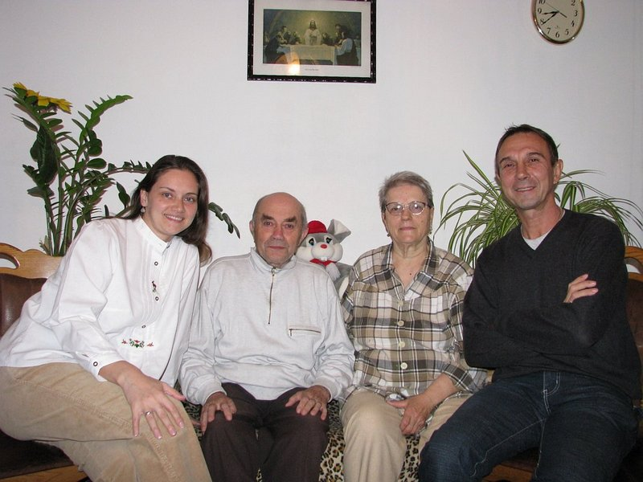

Памяти Шнекенберг Виктора
Меня звали Шнекенберг Виктор. В моей жизни не было ничего исключительного, напротив, это была простая жизнь простого человека. Миллионы других прожили такую же жизнь. Конечно, у кого-то было что-то, чего не было в моей жизни, ну а в моей было то, что было только в моей. Мой отец, Отто-Александр Шнекенберг, родился 01.04.1887 года в городе Белосток, что расположен на северо-востоке Польши. Приблизительно в 1915 году он переехал в город Брянск. Женился на девушке по имени Пелагея и в браке на свет появились мои сёстры Эля ( 1919), Зена (1922), Регина (1924) и я, Виктор (02.03.1927). В результате несчастного случая моя левая нога была повреждена и после последующих операций стала короче на несколько сантиметров. Это увечье, плюс то, что я был самым младшим ребёнком ( и единственным мальчиком!), позволяло мне в полной мере наслаждаться заботой и вниманием ко мне со стороны родителей и сестёр.

Семейная идиллия продолжалась недолго. В 1933 году отца угнали в Сибирь, где его следы затерялись и с тех пор мы никогда не смогли узнать, где и как он погиб. А потом началась война. Мы жили рядом с аэродромом, который постоянно бомбили, и нам приходилось прятаться в подвале. А потом пришли немцы. Это продолжалось недолго, потому что советские войска смогли переломить ход войны и немцам пришлось отступать. И Адольф дал приказ: "вся немецкая кровь должна вернуться на родину". И нас повезли в Германию. Разместили нас в городе Гера. Мы получили удостоверения немецких переселенцев. Вокруг слышалась немецкая речь, которую я знал только по школьной программе.


Деваться было некуда, надо было продолжать жить. Я поступил в училище и выучился на слесаря. В 1944 году, когда советские и американские войска вошли в Германию, нас перевели в американскую оккупацционную зону в Баварию. Там, в Розенхайме, я и прожил всю свою жизнь, работая слесарем на фабрике. Пролетели годы, незаметно подошла пенсия. В 1993 году я познакомился с молодым человеком, по имени Николай. Он приехал из России и хотел жить в Германии. Мы оба были заядлыми рыбаками и на этой почве возникла наша дружба. Было интересно поговорить с ним о жизни, войне, политике. В 1995 году к Николаю приехала мать, с которой он меня познакомил. Её звали Пелагея, также, как и мою маму. У нас возникли чувства и мы поженились. Николая я усыновил, он получил мою фамилию.

К сожалению, несмотря на усыновление с правами несовершеннолетнего, Николая не оставили в Германии и ему пришлось покинуть страну. Мы с Пелагеей остались одни. Я всю жизнь боялся разного рода учреждений и служащих, и не вступал с ними в борьбу, хотя и мечтал о полноценной семье. Мне хотелось жить тихо и спокойно, без потрясений. В 2008 году я попал в аварию и врачи вставили мне в ногу титановый штырь. Я смеялся - теперь я очень дорогой, во мне сидит железяка стоимостью в 40 тысяч евро! О смерти я не думал, так как хотел прожить лет 120, а дальше - уж как бог захочет. Но было интересно: заберёт ли после моей смерти государство свой титановый штырь или так и оставит во мне?
В 2010 году к нам прилетал Николай с супругой Анной, они живут в Доминиканской республике.

Мы купили компьютер, подключили интернет и, благодаря Скайпу, у нас была возможность общаться. Для меня было интересно, как далеко шагнула техника и как на экране монитора можно видеть людей, находящихся за десятки тысяч километров. Что-то интересное стало происходить с моей памятью: я прекрасно помнил все стихи, песни, услышанные ещё в детстве в России и готов был цитировать их часами, но совершенно не помнил, что я ел на завтрак. Рыбалку, по причине здоровья, пришлось оставить. Сил оставалось только на то, чтобы сходить за покупками в магазин или повозиться с цветами на огородике.
В июле 2014 года мне стало плохо, вызвали скорую, меня оперировали. Неделю шла борьба между жизнью и смертью. Смерть победила и 1 августа я умер. Мне было 87 лет. Вот так и прошла моя жизнь, простая жизнь простого человека. Сейчас меня нет с вами, но я знаю, что вы помните обо мне. А я, где бы я сейчас не был - люблю вас, ребята!
Виктор читает басню "Мартышка и очки". 10 января 2014 год.
Виктор поёт песню "Кукарача".
Виктор поёт военную песню.
Виктор, мы тебя помним и любим!
* 02.03.1927 - † 01.08.2014